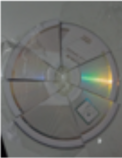
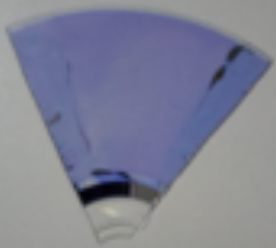
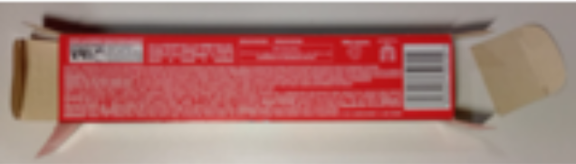
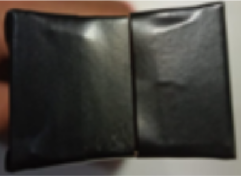
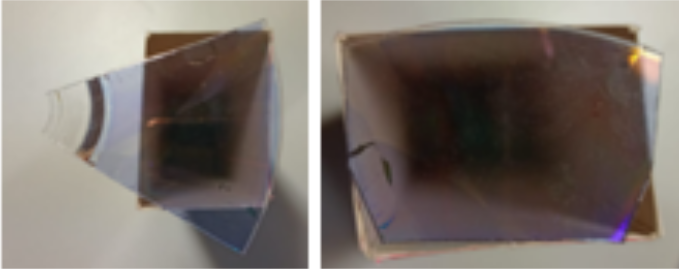
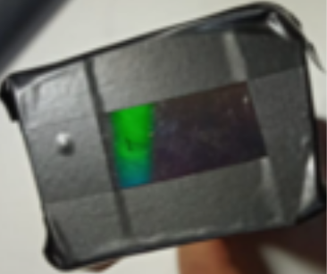
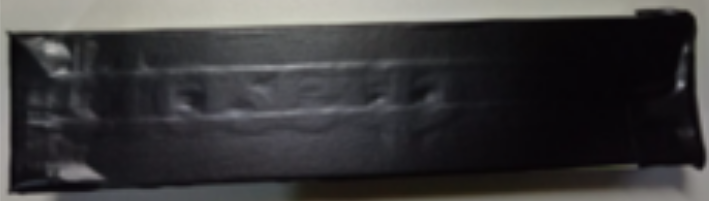

Visão à luz da Física

O espectroscópio
Para entender o funcionamento do LED como sensor de luz é necessário analisar os espectros de emissão/absorção desses LED. Para isso, propomos ao alunos a construção de um espectroscópio utilizando como base a proposta da publiclab.org.
Materiais
- Caixinha de creme dental
- CD - disco compacto
- Régua
- Tesoura sem ponta
- Fita adesiva
- Fita isolante preta
- Estilete ou lamina de barbear
Montage do espectroscópio
A construção segue as indicações encontradas no site da publiclab
-
Obtenha a lente difrativa do espectroscópio a partir de um CD
- Cubra o lado de cima do CD com fita adesiva
-
Corte o CD em 7 partes

-
Descole a fita adesiva para remover a película de proteção

-
Montagem da estrutura do espectroscópio a partir de um caixa de creme dental
-
Cortes das abas laterais de um tampas

- Corte pela metade a aba superior e a inferior da mesma tampa
-
Colar fita isolante em toda a caixa, deixando apenas uma pequena fenda

-
Cortes das abas laterais de um tampas
-
Adição da lente difrativa à estrutura do espectroscópio
- Corte a tampa e ambas as abas de um lado da caixa
-
Faça a medição da lente difrativa e corte-a de acordo com a abertura da caixa

- Cole a fita isolante na lente difrativa como se mostra na figura abaixo
-
Cole a lente difrativa na caixa com o cuidado de colocar nova fita isolante nas frestas

Cubra toda a caixa com fita isolante

Aplicação 01
Observe diferentes fontes de luz colocando a parte do espectroscópio com o pedaço de CD próximo a um dos olhos e o extremo com a fenda na direção da fonte de luz.
Como fonte de luz pode ser utilizados:
- Sol, de forma indireta
- Lâmpada incandescente
- Lâmpada Fluorescente
- LEDs coloridos: vermelho, laranja, amarelo, verde, azul, rosa, roxo
Aplicação 02
Cole o espectroscópio à lente da câmera de um celular utilizando fita adesiva, permitindo a captura fotográfica dos espectros gerados por diferentes fontes de luz previamente analisadas.
Após a captura, é necessário analisar o espectro fotografado, construindo uma curva de frequência versus intensidade (ou comprimento de onda vs intensidade, conforme a calibração).
Em nosso trabalho, utilizamos originalmente o software de espectroscopia disponibilizado pela Public Lab. Contudo, devido à indisponibilidade temporária do site da plataforma, recomendamos como alternativa o software Theremino, que oferece funcionalidades similares (e até mais avançadas).
O site da Theremino disponibiliza diversos recursos gratuitos de hardware e software para projetos científicos, incluindo:
- Um guia detalhado para construção de um Espectrômetro de Theremino, cujo design é semelhante ao proposto pela Public Lab;
- Softwares especializados para análise espectral, que permitem processar dados de intensidade luminosa em função da frequência/comprimento de onda;
- Tutoriais para calibração e interpretação de espectros.
Independentemente do software utilizado, é indispensável realizar a calibração do sistema. Para isso, recomenda-se o uso de uma lâmpada fluorescente, cuja composição inclui vapor de mercúrio. Esse elemento emite duas linhas espectrais bem características:436 nm (faixa do azul) e 546 nm (faixa do verde)
Essas linhas servem como referência para que o software estabeleça uma relação de proporcionalidade no eixo dos comprimentos de onda, permitindo a atribuição de valores numéricos precisos às bandas espectrais de outras fontes luminosas analisadas.